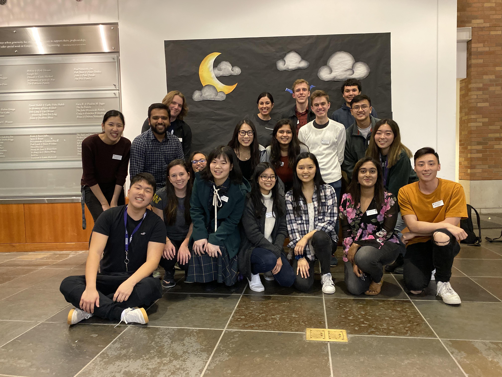
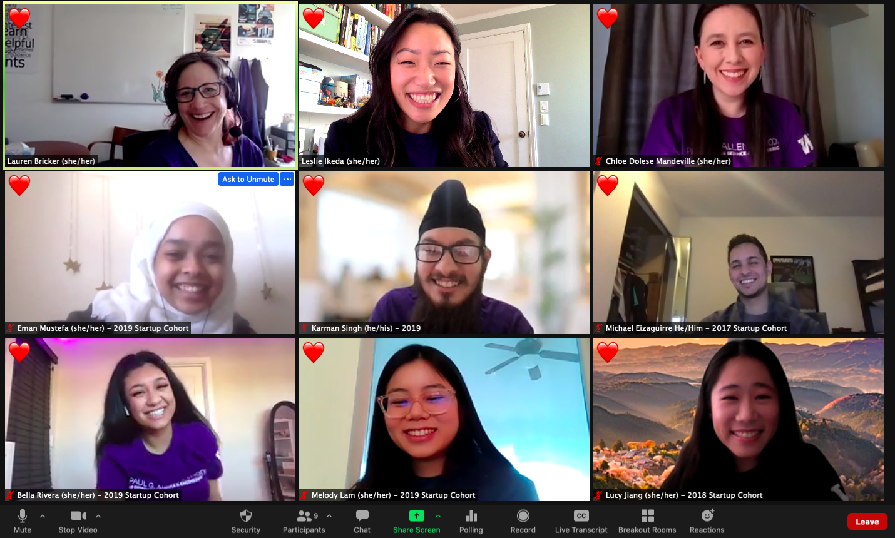

Leadership
Outside of research and academics, I’m dedicated to making the field of computer science more accessible by breaking down barriers and building support systems for the next generation of computer scientists. Technology cannot be built in a vacuum, and ensuring that people of all backgrounds are represented and feel welcome within the field of computing is one of my core values. Furthermore, accessibility research cannot be conducted without the voices and input of the disability community. It is the responsibility of researchers to center the voices of disabled researchers and users, educate themselves on and consistently challenge disability in today’s society, and commit to conducting ethical research.
In fall of 2019, I joined UW Association for Computing Machinery (ACM)’s executive board, and since fall of 2020, I’ve served as Chair. I’ve empowered new admits and experienced students to find their communities, both during the isolating pandemic and through the tumultuous transition back to in-person events. This year, we saw a 44% increase in signups for the fourth year of our Big / Little peer mentorship program, in which we match experienced students with new admits based on technical interests, hobbies, and identities (if they choose). As Chair, I oversaw all logistics and helped with event coordination, advertising, and matching. Many enter the Allen School thinking that it will be a rigorous and competitive environment. However, participants shared that this program helped them realize that the Allen School is much more collaborative than they thought.
Alongside our social events, I led ACM in running our first ever fundraising events last year. During the pandemic, I partnered with local organizations in Seattle; we raised over $3460 for the University District Food Bank, Code.org, and Seattle Children’s Hospital combined. This year, during our first post-pandemic autumn quarter social, we hosted over 250 attendees and received more than 60 donations from students and faculty, exceeding our goal of raising $1500 for the University District Food Bank.
In June 2020, I and other student leaders founded Student Leaders for Inclusion, Diversity, and Equity (SLIDE), a coalition supporting student-led advocacy to improve racial and intersectional diversity efforts in CS. We’ve met with directors and faculty to push for inclusive hiring and resources for underrepresented students, resulting in concrete changes to the department’s strategic plan for diversity. Through both ACM and SLIDE, I work to uplift underrepresented groups in computing, and help them build connections and find friendships that will last beyond their college years.
Community

ACM Officers at Fall Fest 2021, our first in-person social since 2020!
ACM Officers at Fall Fest 2019!
Outreach to new admits as part of the EFS Teaching Team!